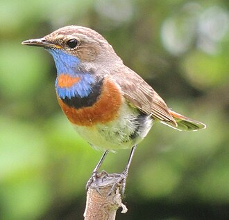

Заголовок 1
Заголовок 2
Заголовок 3
Заголовок 4
Заголовок 5
Соловьина бомбордировка

- drundos
- deepseek
- hentavirus
- drundos
- deepseek
- hentavirus
- Linux
-
это гигантский конструктор LEGO для взрослых. Это не просто
готовая система вроде Windows, где вам дают квартиру с прибитой
к полу мебелью. Linux — это пустая комната, где вы сами решаете,
где будет стоять шкаф, какой формы будут окна и нужны ли вам
вообще стены.
| линукс минотавра |
ивлан черноус |
кунилигин дамьян |
| линукс торвальдс |
энпштейн |
.html |
попич